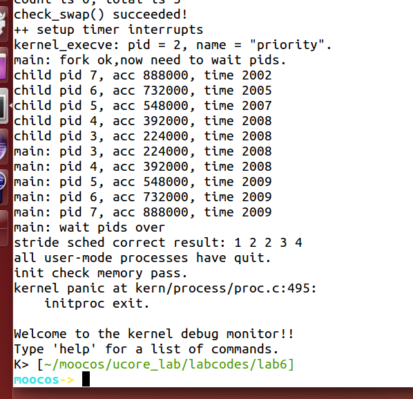
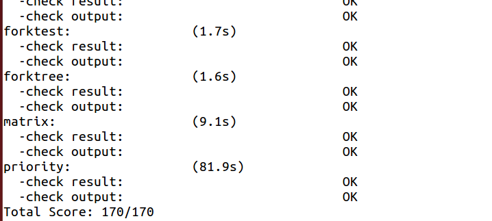

[TOC]
练习2: 实现 Stride Scheduling 调度算法（需要编码）
首先需要换掉RR调度器的实现，即用default_sched_stride_c覆盖default_sched.c。然后根据此文件和后续文档对Stride度器的相关描述，完成Stride调度算法的实现。
后面的实验文档部分给出了Stride调度算法的大体描述。这里给出Stride调度算法的一些相关的资料（目前网上中文的资料比较欠缺）。
- strid-shed paper location1
- strid-shed paper location2
- 也可GOOGLE “Stride Scheduling” 来查找相关资料
执行：make grade。如果所显示的应用程序检测都输出ok，则基本正确。如果只是priority.c过不去，可执行 make run-priority 命令来单独调试它。大致执行结果可看附录。（ 使用的是 qemu-1.0.1 ）。
请在实验报告中简要说明你的设计实现过程。
BIG_STRIDE参考：https://yuerer.com/%E6%93%8D%E4%BD%9C%E7%B3%BB%E7%BB%9F-uCore-Lab-6/
// 1. 如何比较优先级？为什么结果转化为有符号数就可以？*************************************************
// 无符号数相减的结果转化为有符号数 再和0比较可判断二者大小
/*
eg: (溢出的)000111 - (未溢出)111111 = 001000 > 0
(溢出的)000111 - (溢出的)000011 = 000100 > 0
(未溢出)110111 - (未溢出)111111 = 111000 < 0
*/
#include <defs.h>
#include <list.h>
#include <proc.h>
#include <assert.h>
#include <default_sched.h>
#define USE_SKEW_HEAP 1
//2.******************************************************************
/* You should define the BigStride constant here*/
/* LAB6: YOUR CODE */
/* 从STRIDE_MAX – STRIDE_MIN <= BIG_STRIDE开始分析，
首先前面两个刚开始是无符号的数,然后他们的差需要转化为有符号的数进行比较来判别哪个大,于是BIG_STRIDE的值就是31位的int最大值,因为32位的int最大值和31位的一样,因此是(((uint32_t)-1) >> 1)
每个进程 每次执行完以后 都要在 stride步进 += pass步长
其中 步长 是和 优先级成反比的 因此 步长可以反映出进程的优先级,但是随着每次调度 步长不断增加 有可能会有溢出的风险,因此 需要设置一个步长的最大值 使得他们哪怕溢出 还是能够进行比较
在 uCore 中 BIG_STRIDE 的值是采用 无符号32位整数表示 而 stride 也是无符号32位整数
也就是说 最大值只能为 (2^32 - 1),如果一个 进程的 stride 已经为 (2^32 -1) 时 那么再加上 pass步长 一定会溢出 然后又从0开始算.这样 整个调度算法的比较 就没有意义了
这说明 我们必须得约定一个 最大的步长 使得两个进程的步进值哪怕其中一个溢出 或者都溢出 还能够进行比较
首先 因为 步长 和 优先级成反比 可以得到下面一条
pass = BIG_STRIDE / priority <= BIG_STRIDE
进而得到
pass_max <= BIG_STRIDE
最大步长 - 最小步长 一定小于等于步长
max_stride - min_stride <= pass_max
所以得出
max_stride - min_stride <= BIG_STRIDE
前面说了 uCore 中 BIG_STRIDE 用的 无符号32位整数 最大值只能为 (2^32 - 1)
而 又因为是无符号的 因此 最小 只能为 0 而且我们需要把32位无符号整数进行比较 需要保证任意两个进程stride的差值在32位有符号数能够表示的范围之内 故 BIG_STRIDE 为 (2^32 - 1) / 2 (即有符号数的最大值)
*/
#define BIG_STRIDE (((uint32_t)-1) >> 1)/* you should give a value, and is ??? */
/* The compare function for two skew_heap_node_t's and the
* corresponding procs*/
// 基于第一步的解释之后,这个比较方法就很好理解了
static int
proc_stride_comp_f(void *a, void *b)
{
struct proc_struct *p = le2proc(a, lab6_run_pool);
struct proc_struct *q = le2proc(b, lab6_run_pool);
int32_t c = p->lab6_stride - q->lab6_stride;
if (c > 0) return 1;
else if (c == 0) return 0;
else return -1;
}
// 3.************************************************
/*
* stride_init initializes the run-queue rq with correct assignment for
* member variables, including:
*
* - run_list: should be a empty list after initialization.
* - lab6_run_pool: NULL
* - proc_num: 0
* - max_time_slice: no need here, the variable would be assigned by the caller.
*
* hint: see libs/list.h for routines of the list structures.
*/
static void
stride_init(struct run_queue *rq) {
/* LAB6: YOUR CODE
* (1) init the ready process list: rq->run_list
* (2) init the run pool: rq->lab6_run_pool
* (3) set number of process: rq->proc_num to 0
*/
list_init(&(rq->run_list));
rq->lab6_run_pool = NULL;
rq->proc_num = 0;
}
// 4.*******************************************************
/*
* stride_enqueue inserts the process ``proc'' into the run-queue
* ``rq''. The procedure should verify/initialize the relevant members
* of ``proc'', and then put the ``lab6_run_pool'' node into the
* queue(since we use priority queue here). The procedure should also
* update the meta date in ``rq'' structure.
*
* proc->time_slice denotes the time slices allocation for the
* process, which should set to rq->max_time_slice.
*
* hint: see libs/skew_heap.h for routines of the priority
* queue structures.
*/
static void
stride_enqueue(struct run_queue *rq, struct proc_struct *proc, proc_stride_comp_f) {
/* LAB6: YOUR CODE
* (1) insert the proc into rq correctly
* NOTICE: you can use skew_heap or list. Important functions
* skew_heap_insert: insert a entry into skew_heap
* list_add_before: insert a entry into the last of list
* (2) recalculate proc->time_slice
* (3) set proc->rq pointer to rq
* (4) increase rq->proc_num
*/
// 从skew_heap_insert得知init的是b也就是第二个参数,因此把第二个参数作为proc
// skew_heap_insert返回的是新的根节点
rq->lab6_run_pool = skew_heap_insert(rq->lab6_run_pool, &(proc->lab6_run_pool), proc_stride_comp_f);
// 根据实验指导书规定proc的priority需要大于1***************************
// proc->lab6_priority = 1;
// if(proc->lab6_priority < 1)
// proc->lab6_priority = 2;
// 测试一直过不去,看了答案发现没这句！！！
// 模仿RR
if (proc->time_slice == 0 || proc->time_slice > rq->max_time_slice) {
proc->time_slice = rq->max_time_slice;
}
proc->rq = rq;
(rq->proc_num)++;
}
// 5.**********************************************************
/*
* stride_dequeue removes the process ``proc'' from the run-queue
* ``rq'', the operation would be finished by the skew_heap_remove
* operations. Remember to update the ``rq'' structure.
*
* hint: see libs/skew_heap.h for routines of the priority
* queue structures.
*/
static void
stride_dequeue(struct run_queue *rq, struct proc_struct *proc) {
/* LAB6: YOUR CODE
* (1) remove the proc from rq correctly
* NOTICE: you can use skew_heap or list. Important functions
* skew_heap_remove: remove a entry from skew_heap
* list_del_init: remove a entry from the list
*/
// 根据skew_heap_remove(skew_heap_entry_t *a, skew_heap_entry_t *b,compare_f comp)的实现可知其被移除的元素
// 是b,返回值是根节点
rq->lab6_run_pool = skew_heap_remove(rq->lab6_run_pool, &(proc->lab6_run_pool), proc_stride_comp_f);
(rq->proc_num)--;
}
// 6.***********************************************************
/*
* stride_pick_next pick the element from the ``run-queue'', with the
* minimum value of stride, and returns the corresponding process
* pointer. The process pointer would be calculated by macro le2proc,
* see kern/process/proc.h for definition. Return NULL if
* there is no process in the queue.
*
* When one proc structure is selected, remember to update the stride
* property of the proc. (stride += BIG_STRIDE / priority)
*
* hint: see libs/skew_heap.h for routines of the priority
* queue structures.
*/
static struct proc_struct *
stride_pick_next(struct run_queue *rq) {
/* LAB6: YOUR CODE
* (1) get a proc_struct pointer p with the minimum value of stride
(1.1) If using skew_heap, we can use le2proc get the p from rq->lab6_run_poll
(1.2) If using list, we have to search list to find the p with minimum stride value
* (2) update p;s stride value: p->lab6_stride
* (3) return p
*/
if(rq->lab6_run_pool == NULL) return NULL;
struct proc_struct *p = le2proc(rq->lab6_run_pool, lab6_run_pool);
// stride_dequeue(rq, p); 不用出队吗
// priority参考了答案,如果按照答案的话那所有的pass岂不都是1了
if(p->lab6_priority == 0)
p->lab6_stride += BIG_STRIDE;
else p->lab6_stride += BIG_STRIDE/p->lab6_priority;
return p;
}
// 7.**********************************************************************
/*
* stride_proc_tick works with the tick event of current process. You
* should check whether the time slices for current process is
* exhausted and update the proc struct ``proc''. proc->time_slice
* denotes the time slices left for current
* process. proc->need_resched is the flag variable for process
* switching.
*/
static void
stride_proc_tick(struct run_queue *rq, struct proc_struct *proc) {
/* LAB6: YOUR CODE */
// 模仿RR
if (proc->time_slice > 0) {
proc->time_slice --;
}
if (proc->time_slice == 0) {
proc->need_resched = 1;
}
}
struct sched_class default_sched_class = {
.name = "stride_scheduler",
.init = stride_init,
.enqueue = stride_enqueue,
.dequeue = stride_dequeue,
.pick_next = stride_pick_next,
.proc_tick = stride_proc_tick,
};
// 然后一直不通过测试:correct result: 1 2 2 3 4 ，去piazza查了下 发现设置user/priority.c中的MAX_TIME可以修复这个问题
// 于是我把MAX_TIME改成了8000输出的结果就是1 2 3 4 5 了 通过了！！ 然后我又测试了两次 3000失败了 4000成功了!!

tips：
得出结果(make qemu的时候要等一会才出结果，我刚开始以为我错了，结果是要等几秒才出现pid什么的)